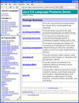
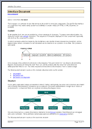
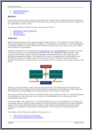

Using it, you can generate:
'templates/javadoc/' directory of the
DocFlex/Javadoc installation.
'templates/javadoc/lib/'
directory of the DocFlex/Javadoc installation.
The basic templates are subdivided into two categories:
'templates' directory of the
DocFlex/Javadoc installation.
'templates/lib'
directory of the DocFlex/Javadoc installation.

 
| Template | Description | Called From |
|---|---|---|
| PlainDoc.tpl | generates single-file documentation in any of the supported formats (HTML, RTF and TXT) | generator (doclet) |
| FramedDoc.tpl | generates framed hypertext documentation (HTML only) | generator (doclet) |
| Template | Description | Called From |
|---|---|---|
| init.tpl | creates element maps | PlainDoc.tpl, FramedDoc.tpl |
| Subtemplates called to generate either big sections of single-file documentation or separate documents for the “detail” frame of framed HTML documentation | ||
| overview-summary.tpl | generates the overview for the whole documentation | PlainDoc.tpl, FramedDoc.tpl |
| package-summary.tpl | generates a package overview (i.e. description, tags and summary tables of contained classes) | PlainDoc.tpl, FramedDoc.tpl |
| class.tpl | generates the detailed documentation for a class (i.e. class, interface, enum or annotation type) | PlainDoc.tpl, FramedDoc.tpl |
| Subtemplates called to generate small fragments of the detailed documentation | ||
| annotations.tpl | generates list of annotations (along with all related hyperlinks) of a package, class, member or constructor/method parameter | class.tpl, package-summary.tpl |
| inline-tag.tpl | processes most of the inline tags | class.tpl, overview-summary.tpl, package-summary.tpl |
| see-link.tpl | processes a user-defined cross-reference to related documentation | class.tpl, inline-tag.tpl, overview-summary.tpl, package-summary.tpl |
| about.tpl | prints the “about” information at the bottom of most of documents | PlainDoc.tpl, class.tpl, overview-summary.tpl, package-summary.tpl |
| Subtemplates that generate separate reference files used only in framed HTML documentation | ||
| overview-frame.tpl | generates the reference document for the whole documentation | FramedDoc.tpl |
| all-classes-frame.tpl | generates the reference document for all classes | FramedDoc.tpl |
| package-frame.tpl | generates the reference document for a package | FramedDoc.tpl |
| package-list.tpl |
generates the
package-list
text file
|
FramedDoc.tpl |
Also, the template parameters can be passed via -p option on the Javadoc command line.
| Parameter/Grouping | Description | ||||||||||||||||||
|---|---|---|---|---|---|---|---|---|---|---|---|---|---|---|---|---|---|---|---|
| Window Title |
Parameter name: windowTitle
Specifies the browser window title for the documentation.
This is similar to
|
||||||||||||||||||
| Documentation Title |
Parameter name: docTitle
Specifies the title to be placed at the the top of the documentation overview. |
||||||||||||||||||
| Include | |||||||||||||||||||
Parameter name: include.deprecated
Controls whether to generate documentation for any deprecated API. |
|||||||||||||||||||
| This group of parameters controls how much details are included in the generated documentation. This may be important for printing, since the documentation with all details may occur too big to be printable. | |||||||||||||||||||
Parameter name: include.details.overview
Specifies whether to include the overview summary for the whole documentation. |
|||||||||||||||||||
Parameter name: include.details.packages
Specifies whether to include the details of packages.
If |
|||||||||||||||||||
Parameter name: include.details.classes
Specifies whether to include details of classes.
If |
|||||||||||||||||||
Parameter name: include.details.innerClasses
Specifies whether inner classes should be included into the generation scope.
If |
|||||||||||||||||||
Parameter name: include.details.members
Specifies whether to include details of class members (i.e. methods and fields).
If |
|||||||||||||||||||
Parameter name: include.details.initialValues
Specify whether the initial values of fields should be shown in the documentation. |
|||||||||||||||||||
| This group of parameters controls whether to include in the generated docs the sections associated with some tags. | |||||||||||||||||||
Parameter name: include.tag.version
Include the @version text in the generated docs. |
|||||||||||||||||||
Parameter name: include.tag.author
Include the @author text in the generated docs. |
|||||||||||||||||||
Parameter name: include.tag.custom
This parameter duplicates the functionality of the
It allows you to include in the generated output the documentation of your custom tags, specify the tag headings as well as their ordering. You will be able also to redefine the headings and ordering of the standard tags (such as @param, @see, @author etc). This parameter accepts multiple (list) value. Each value item specifies how a single tag should be documented. Specifying Single TagDocumenting of a single tag is specified with the following expression:
The tagname is the name of the tag for which this setting applies.
The taghead is the heading for the tag documentation.
Omitting taghead causes tagname to be used as the heading
(unless this is a standard tag). If the tag has no text (specified in the Java comment),
only the heading will appear in the generated output.
The
Examples: The following parameter value item:
specifies a custom @threadsafe tag to be documented anywhere it is used with the heading message:
Can be called safely from multiple threadsThe following value item specifies that @todo tag should be processed
only with constructors, methods and fields:
Notice the last colon (:) above is not a separator, but is part of the heading text (as shown below).
You would use either tag option for source code that contains the tag @todo, such as:
This line would produce output something like:
To Do:The documentation for this method needs work. Use of Colon in Tag Name A colon can be used in a tag name if it is escaped with a backslash. For this doc comment:use the following setting of the parameter value:/** * @ejb:bean */
Specifying Multiple TagsDocumenting of different tags should be specified in different items of the whole parameter value. Each value item should define how to document a single tag as described above. The items must be separated with one of the allowed item separator characters (newline or ';').
Example: or the same as a single line:ejb\:bean:a:EJB Bean: todo:cmf:To Do:
The last form can be used to specify both tags on the Javadoc command line:
(Note: Because the full parameter value here contains spaces, it is enclosed in quotes
in order to make it treated as a single command-line argument.)
The same can be also specified with two
Each -p option adds a separate value item to 'include.tag.custom' parameter.
Tag Ordering The tags will appear in the output documentation in the same order as they are specified in the value items of this parameter. For instance, in the example above, the documentation of'@ejb:bean' tag will be followed by the documentation of '@todo' tag.
Using this parameter, you can also redefine the ordering of the standard tags, for example:
This setting says that @version tag should be documented before the custom @todo tag
followed by the documentation of @see tags.
Any other standard tags will be documented as usual in a certain some predefined order before the tags specified in this parameter. Using EscapesEach character that serves as a value item separator can be equally used within the value items if escaped with a backslash. For example, documenting of the tag:
can be specified like this:
If a backslash is not consumed by an escape it will be remained in the text as is.
To make sure that a backslash is not part of some escape, you may add another backslash.
A sequence of two backslashes ("\\") is an escape by itself, which represents a single backslash.
This is important because backslashes may be used also in a secondary system of escapes
(e.g. to escape ':' within the tag name).
For example, a string like this:
will be initially processed and broken into two value items:
then, processed further to document allmy;odd;tag:a:\My Odd Title\ ejb\:bean:a:EJB Bean: '@my;odd;tag' tags with "\My Odd Title\" title
and all '@ejb:bean' tags with "EJB Bean:" title.
|
|||||||||||||||||||
| Exclude | Specify what should be entirely excluded from the generation scope. | ||||||||||||||||||
| This group of parameters allows you to exclude from the generated documentation classes, fields and methods with specified tags (custom or not). | |||||||||||||||||||
Parameter name: exclude.byTags.all
Specify tags by which both classes and class members (i.e. fields, constructors and methods) are completely excluded from the generated documentation. A class is excluded when at least one of the conditions is met:
The multiple exclude-tag names must be separated with new lines ('\n'), semicolons (';') or colons (':'). For example:
|
|||||||||||||||||||
Parameter name: exclude.byTags.classes
This parameter allows you to hide completely from the generated documentation some intermediate classes of your internal implementation (that for some reasons need to be public), however, preserve documenting of some fields and methods (defined within those classes) which are supposed to be part of an open API. This may be particularly helpful when you will need next time to change your implementation while keeping intact what you have declared in your open API. The tags specified in this parameter are treated as the following. A class will be never mentioned in the documentation when at least one of the conditions is met:
Overall effect should be that the generated documentation will look as if the excluded classes themselves did never exist at all, however, everything else is in place and correct. The multiple exclude-tag names must be separated with new lines ('\n'), semicolons (';') or colons (':'). For example:
|
|||||||||||||||||||
Parameter name: exclude.byTags.members
Specify tags by which only class members (i.e. fields, constructors and methods) are selectively excluded from the generated documentation. A class member, which otherwise (without this parameter) would be documented, is excluded when it has at least one of the specified tags. The multiple exclude-tag names must be separated with new lines ('\n'), semicolons (';') or colons (':'). For example:
|
|||||||||||||||||||
| This group of parameters provides an alternative way of excluding classes and class members from the generated documentation. | |||||||||||||||||||
|
As you know, one of the new language features introduced in Java 5 is “annotations”.
Annotations are essentially similar to tags. However, unlike tags, they are specified not within
Java comments, but directly in Java code. That is, annotations are processed by the Java compiler
itself and can be retained in the compiled binary classes (which is impossible with tags).
So, similar to tags you can mark some of the classes and members with annotations and, then, filter them out by those annotations from the generated documentation. But, why would you need to use annotations? Why are tags not enough? Let's suppose, you have a library of some core Java classes for internal use. That library is quite a separate thing. So, you may use it in different projects (or different people are using it). Therefore, you maintain that library in a precompiled binary form as a jar-file. Now, you are developing a project, in which you use that internal library. You want to publish certain classes of that project as an open API to your system. But some of those classes you want to publish are inherited from the classes of your internal library (or implement interfaces from it). The Java API documentation generated by Javadoc would mention those internal classes as superclasses (implemented interfaces) of your API. But you do not want them to be visible in the published documentation (they are internal after all)! How can you do that? Marking your internal classes with tags to be excluded by them will not work, because your tags will not get into the compiled jar-file. Here is where annotations can help! Let's see how you can do it. First, you need to define your annotation type like the following (all names are for example):
These lines should be saved as
Note, as with any Java class, the defined annotation type has a fully qualified name,
which will be the string: Now, you can use this annotation type to mark your internal classes. Here is how:
After that, you can exclude all classes marked with that annotation from the generated
documentation by specifying the annotation type qualified name
This will equally work both with the classes defined in the Java sources and the binary classes found on the Javadoc classpath! |
|||||||||||||||||||
Parameter name: exclude.byAnns.all
Specify annotation types by which both classes and class members (i.e. fields, constructors and methods) are completely excluded from the generated documentation. A class is excluded when at least one of the conditions is met:
Each annotation type must be specified with its fully qualified name
(e.g.
For more details about using annotations, see description of the Exclude | By Annotations parameter group. |
|||||||||||||||||||
Parameter name: exclude.byAnns.classes
This parameter allows you to hide completely from the generated documentation some intermediate classes of your internal implementation (that for some reasons need to be public), however, to preserve documenting of some fields and methods (defined within those classes) which are supposed to be part of an open API. This may be particularly helpful when you will need next time to change your implementation while keeping intact what you have declared in your open API. The annotation types specified in this parameter are treated as the following. A class will be never mentioned in the documentation when at least one of the conditions is met:
Overall effect should be that the generated documentation will look as if the excluded classes themselves did never exist at all, however, everything else is in place and correct.
Each annotation type must be specified with its fully qualified name
(e.g.
For more details about using annotations, see description of the Exclude | By Annotations parameter group. |
|||||||||||||||||||
Parameter name: exclude.byAnns.members
Specify annotation types by which only class members (i.e. fields, constructors and methods) are selectively excluded from the generated documentation. A class member, which otherwise (without this parameter) would be documented, is excluded when it has an annotation of one of the specified types.
Each annotation type must be specified with its fully qualified name
(e.g.
For more details about using annotations, see description of the Exclude | By Annotations parameter group. |
|||||||||||||||||||
| Omit | This group of parameters controls which information should not appear in the generated documentation. | ||||||||||||||||||
Parameter name: omit.packageQualifiers.for
Specify the packages whose qualifying names should be omitted from ahead of class names in parameters, types, referenced classes (like exception lists, implemented interfaces, etc.), @see tags and {@link} tags in comments. The packages to omit are specified as the list of package name prefixes delimited with new lines ('\n'), semicolons (';') or colons (':'). For example:
When a particular fully-qualified name is decided whether to be shortened, the answer will be yes when the full name starts with one of the specified prefixes. |
|||||||||||||||||||
Parameter name: omit.packageQualifiers.all
If selected, all qualifying package names will be omitted from ahead of class names in parameters, types, referenced classes (like exception lists, implemented interfaces, etc.), @see tags and {@link} tags in comments. |
|||||||||||||||||||
Parameter name: omit.inheritedMemberLists.for
Suppress generation of lists of the inner classes, fields or methods inherited from those classes/interfaces, which belong to the packages specified with this parameter. This parameter may be especially useful to suppress long lists of the class members inherited from the standard Java API classes and, in such a way, to considerably reduce the output documentation. The packages, whose classes/inerfaces should not appear in the "inherited from ..." lists, are specified as the list of the package name prefixes delimited with new lines ('\n'), semicolons (';') or colons (':'). For example, the following will exclude lists of the members inherited from most of the standard Java API classes:
|
|||||||||||||||||||
Parameter name: omit.inheritedMemberLists.all
If selected, no lists of inherited inner classes, fields or methods will be generated at all. |
|||||||||||||||||||
| Formatting | This group of parameters controls some formatting features of the output documentation specifically generated by this template. | ||||||||||||||||||
Parameter name: fmt.page.breakBefore.package
If |
|||||||||||||||||||
Parameter name: fmt.page.breakBefore.class
If |
exclude.byTags),
which since v1.5.1 has been split into several ones.
Those parameters can be used to exclude from the generated documentation classes, fields and methods
with specified tags.
See the parameter description for more details.
Since version 1.5.2, to that was added a possibility to exclude everything by annotations.
See "Exclude by annotations"
parameter group
(exclude.byAnns.*).
Annotations are more cumbersome to use for that purpose. But they can be retained in the compiled classes.
So the exclusion will work even when no corresponding Java source code is found on Javadoc source path.
Suppose, some time ago you modified the basic templates according to your needs and since then have been (happily) using them. Now, you come to this web-site and notice that the latest version of DocFlex/Javadoc supports a host of new features, which might be interesting to you too (for instance, the full support of Java 5.0).
Of course, you can run your old templates with the new DocFlex Doclet version. But this won't make those new features automatically available to you. First, they must be applied in templates, which are the actual programs that generate everything. (See About DocFlex/Javadoc | Key Features | Template-driven doclet architecture)
So, now you need to migrate to the new basic template set and copy to there or replicate all your specific changes necessary for your work. What is the best way to do this?
The safest way would be to replicate all your changes on the new templates.
You may try to mix your old templates with the new ones. But keep in mind that we constantly change something from the version to version.
Some subtemplates depend on other templates that call them. Basically, there are two such dependencies:
The basic template set is organized so that during the first steps each main template calls the init.tpl subtemplate, whose job is to create the element maps. All element maps are global. Further, they are used in many locations across the template set (especially, in class.tpl).
If the structure of some element maps is different from what is expected and used by a template, that template will work incorrectly (or not work at all)!
| Note: |
Since v1.5.6, all basic templates
also include the version number of the DocFlex/Javadoc release to which the particular
template set belongs.
This may help you to quickly recognize if you have inadvertently mixed the templates
from different versions and because of this now experience errors and wrong working of
your template application.
You can find the version in the |